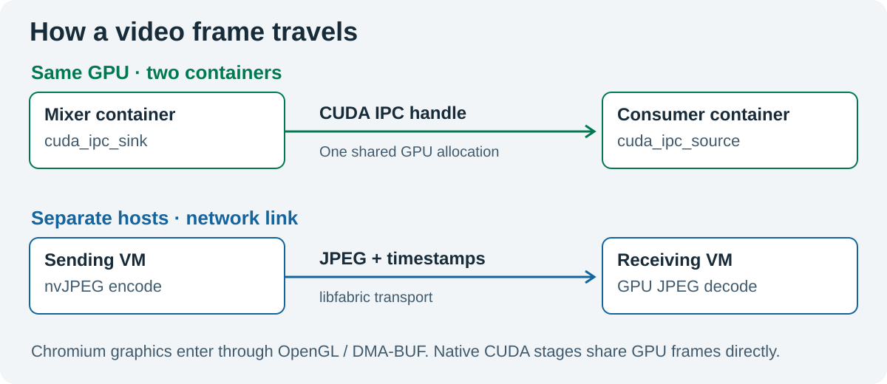

i192 sources, one tiny GPU: building a vision mixer with CUDA
At Amagi, we’ve built an open-source vision mixer that easily handles 192 live sources on one small Nvidia GPU with comfortable overhead.

Built on Teodor Wozniak’s AVPlumber foundations, the graph lets us zoom from a bird’s-eye view down to a single queue: around 1,000 nodes, over 5,000 queues and 38K+ frame handoffs per second. Program composition in our measured run averaged 2.3 ms, with p99 at 4.9 ms within a 33.3 ms frame budget. Production frame accuracy matters as much as source count: in this 192-input run, the graph view reports fewer than one dropped frame per million — below 0.0001%.

Reaching that density meant controlling how frames are stored, shared and scheduled. We built the rendering path in C++ on AVPlumber, using NVIDIA’s decoding, encoding and CUDA APIs.
The demo combines decoded video, raw uploads and live HTML graphics in a 1080p30 show on one NVIDIA L4: an Ada Lovelace GPU rated at 72 W.
Grass Valley’s K-Frame SXP also supports up to 192 inputs. The hardware switcher offers lower latency, full-raster UHD and more broadcast features.

Five hours of production every other day gives the switcher 9,125 operating hours in ten years. Our illustrative $250K installed budget includes $230K for the frame, panel, I/O and licenses, $8.6K for SDI leads, $3K for racks and patching, and $8K for installation. For context, an archived Ohio schedule priced an earlier Kayenne package at $222,300.o

The foundation belongs to Teodor Wozniak (@teodly), the original author of AVPlumber. He designed and wrote the framework’s core API by hand in plain C++, before LLM-assisted coding was part of this work. Its graph, queues, asynchronous processing and ownership rules are his engineering contribution.
I built the mixer on Teodor’s framework. My former Amagi colleague Mateusz Garbowski, now at Intel, laid the groundwork for the mixer’s shaders. I drew on his work to write the CUDA composition shaders from scratch with help from Astra, Opus and Fable.

Own the rendering path
FFmpeg supplies the NVDEC and NVENC bindings. We wrote the compositor in CUDA. The build uses an upstream FFmpeg revision with CUDA-array support, our integration patches and Video Codec SDK 13.1 headers.
A scene describes references, crops, positions and layers. It does not need its own decoded copy of every input. Our kernels sample the original surfaces, scale, convert color and blend into the output canvas. Avoiding intermediate full-frame images saves both memory and the work of moving those pixels.
Credit for that optimization goes to Diego de Souza at NVIDIA for his contributions to upstream FFmpeg’s NVDEC zero-copy CUARRAY output and CUarray surface pools.
For a vertical feed, the AI model and compositor both read the decoder’s original surface. The models and their pre- and post-processing code are private. AVPlumber provides the foundation for Amagi’s upcoming AI-driven live verticalization products and other AI video workflows.

Each source surface stays alive until its final GPU reader finishes, then returns to NVDEC for reuse. NVENC separately holds the composed output until encoding completes. In a matched 192-source, 20-output L4 comparison at 1080p25, CUDA-array output reduced whole-GPU VRAM from 20.65 to 15.77 GiB: a saving of 4.88 GiB.
Make HTML graphics cheap
Chromium makes one internal capture copy. AVPlumber imports each DMA-BUF in the fixed capture pool once through EGL/CUDA and samples it directly. The buffer stays in use until its last GPU reader finishes. For lower thirds, we capture only the bottom third of the frame.
Browser paints arrive slightly early or late. Rounding two paints to the same video tick leaves the next tick empty. Our browser input timestamps successive frames one tick apart, corrects sustained drift and starts a fresh sequence after a pause.

Let independent work overlap
Keeping frames on the GPU solves the copying problem. Keeping many inputs moving also requires efficient CPU scheduling. We distribute input pacing across event loops and use readiness notifications, frame deadlines and coalesced signals to minimize CPU wake-ups.
On the GPU, Program and Preview share the main CUDA stream; each AUX has a private nonblocking stream. Producer events enforce dependencies while allowing independent work to overlap.
For scale, a Blackwell B200 supports up to 303,104 resident CUDA threads (148 SMs × 2,048); Rubin’s published design supports 229,376 (224 × 1,024). Independent streams let the GPU overlap work instead of waiting for the application to submit one bus after another.

We handle 75+ mixer inputs per single, slow GCP vCPU on older Intel Skylake hardware. In this setup, the mixer processing all 192 sources uses about as much CPU as Chromium rendering the 40 browser sources.
To see how the mixer scales beyond 192 sources, we ran 224 on one L4 with 24 AUX outputs at 30 fps (133 decoded feeds, 47 raw feeds and 44 browser pages). Program missed no deadlines during 90 seconds fullscreen and 60 seconds on a 64-tile grid. Browser-to-RTP latency was 190 ms median and 226 ms at p95.
Compare source density
GStreamer Framework is a useful comparison because it already offers native CUDA composition and NVIDIA decoding and encoding. We tested its stock CUDA path on the same L4 hardware. AVPlumber also integrates rotation, sub-pixel transforms, animated zooms and moves, media wipes and cached browser-buffer imports into a complete mixer; the GStreamer benchmark uses a static composition graph.
![Eligible configurations on the same EU NVIDIA L4 host. AVPlumber’s frozen key-advance-enabled reference has 105 decoded videos, 47 true raw inputs and 40 browser sources: 192 inputs, 70.8 ms median latency and 86.3 ms p99. GStreamer’s validated run has 105 decoded videos, 16 true raw sources and exactly eight DMA-BUF browser pages, comprising seven ordinary pages and one timestamp key: 129 inputs, 85.4 ms median and 93.8 ms p99. Every GStreamer browser delivered 29.979–29.999 fps, all 16 raw feeders at least 29.999 fps, program 30.00 fps, lowest AUX 29.98 fps and thumbnail banks 15.00 fps. Both configurations have the 28-output layout: 25 outputs targeted at 30 fps and three thumbnail banks targeted at 15 fps. The latency metric is browser timestamp to arrival of the frame’s final program RTP packet on the host. Workloads are unequal and GStreamer uses a later browser session than the fixed AVPlumber reference; this is not a controlled same-session processing-overhead comparison. The selected GStreamer capture lasted about 20 seconds with 583 valid timestamp frames. All browsers and outputs were probed, but decoder and raw-upload output probes remained sampled and queue-drop instrumentation was disabled. Nominal-30-fps eligibility requires at least 29.9 fps on every browser and 30-fps output, at least 14.9 fps on thumbnail banks, and median and p99 latency both below 200 ms. The 129-input point passes and is not a proven maximum. Short measurements are not a long soak. No replacement CPU, VRAM or thread measurements were made for this GStreamer point.](https://github.com/amagimedia/avplumber/releases/download/mixer-demo-media-2026-10/engineering-20261117-12-open-source-comparison-dark-bee35a3118.png)
Both runs held nominal 30 fps on program and every browser. AVPlumber carried 192 inputs, including 31 more raw feeds and 32 more pages than the 129-input GStreamer run. The short runs used different browser sessions and source mixes. GStreamer’s ceiling is still open. See the Python benchmark and run instructions.
Both stacks replayed the same raw clips from pinned host memory to simulate uncompressed network feeds after arrival. Uploading 47 feeds moves about 4.4 GB/s before composition.
At 40 pages, Chromium delivers 1,200 frames per second. The tested GStreamer path imports each frame into EGL and registers it with CUDA. AVPlumber pays that cost once per buffer in the capture pool.
Cut response with 192 inputs
Keeping sources ready on the GPU is what makes a switcher feel immediate. Decoders stay active, and prewarmed queues hold frame references for the scenes; a cut does not have to start a decoder or copy the inputs. In our 192-input test, AVPlumber reached encoded output in 42.7 ms median / 86.0 ms p99, versus 48.9 ms / 356.2 ms for GStreamer. The medians are close, but AVPlumber’s p99 is about four times lower.
![Cut response at 192 configured inputs on the same NVIDIA L4, 100 cuts at 30 fps per stack. AVPlumber: median 42.7 ms, p99 86.0 ms. GStreamer 1.28: median 48.9 ms, p99 356.2 ms. Complete command receipt to first matching encoded output. Frame dropping was allowed; GStreamer browser inputs did not sustain nominal 30 fps. Lower panel is an illustrative two-frame queue plus one-frame processing budget: 100 ms at 30 fps and 50 ms at 60 fps, with an additional frame for AUX. It is not a measured 60 fps result.](https://github.com/amagimedia/avplumber/releases/download/mixer-demo-media-2026-10/engineering-20261117-14-cut-latency-dark-de488451ef.png)
We issued 100 cuts per stack in this measurement between the same two fullscreen scenes on the same L4, with 192 configured sources and 28 outputs. Frame dropping was allowed: GStreamer’s browser feeds delivered 2–3 fps, so this compares cut response under a fixed load rather than equal input throughput.
At 60 fps, the frame interval falls from 33.3 to 16.7 ms, allowing twice as many visual updates during a T-bar move. The lower timeline illustrates a two-frame queue and a one-frame processing allowance; it is not a measured 192-input 60 fps result.
Code size
A compact implementation also makes the rendering path easier to inspect and change. Teodor’s framework keeps ownership and scheduling explicit; the mixer builds on those foundations instead of adding another general-purpose media layer. The fan-out node is a compact example. The selected native sources total about 26.6K lines of our own code, or 44.1K including the FFmpeg files we use, versus 235K for the selected GStreamer path. That smaller working set also helps when developing with LLM agents and their limited context.
![Code-size comparison, excluding blank and comment lines. GStreamer 1.28.9: 235,039 native lines in the elements and dependencies used by the benchmark. AVPlumber 8251eee0: 26,551 own native lines, plus 17,566 lines in the FFmpeg files it uses, totaling 44,117. The ratios are about 9 to 1 for own native code and 5 to 1 including those FFmpeg files. Python control is 4,237 lines for AVPlumber, comprising 3,707 mixer and 530 core, versus 361 lines for the GStreamer benchmark. AVPlumber is a full switcher with transitions, DSK, clip cache and RTP to Janus; GStreamer is a static benchmark graph. These selected source counts do not measure runtime performance. Exclusions on both sides: GLib/GObject, FFmpeg library cores, vendored NVIDIA headers, generated code and build scripts.](https://github.com/amagimedia/avplumber/releases/download/mixer-demo-media-2026-10/engineering-20261117-13-code-size-dark-693c0b3f8b.png)
This is a comparison of the code selected for these workloads, not a measure of code quality or runtime speed. AVPlumber includes the complete switcher, transitions, downstream keys, clip cache and RTP output to Janus; the GStreamer application is a static benchmark graph.
A Rust refactor of the framework is also underway on the rust-dev branch. The mixer and measurements described here use the current C++/CUDA implementation.
Redundant graph across instances
If we aim for redundancy across instances, frame identity must survive every stage. The sync implementation, now merged into develop, preserves camera timestamps and maps them onto a shared show timeline. Picture matching passed in two containers on one host. Cross-host clock drift and coordinated control of both mixers’ scenes and graphics remain unvalidated.

For two Docker containers on the same GPU, we prefer native CUDA. The CUDA IPC nodes by Mateusz Starzak (@matiaspl) let cuda_ipc_sink export a frame from a CUDA VMM pool and cuda_ipc_source map that same allocation. A compatible replay, playout or third-party NVENC container can consume the frame without copying pixels. We use DMA-BUF for Chromium’s OpenGL graphics.
Between hosts, our experimental nvJPEG/libfabric path compresses linear 8-bit NV12 frames on the sending GPU. Only JPEG packets and timestamps cross the network. The 0.30 ms median measured on one L4 host covers packet transfer alone. Cross-host latency and direct mixer CUarray integration are still open.

Beyond the mixer
- GPU scene analysis. CUDA scene-cut detection includes content, adaptive, histogram and fade detectors. Hardware optical flow estimates camera motion and attaches the measurements to frames.
- Replay and scheduled playout. The video replay demo offers frame/time/UTC seeking, scrubbing, reverse and variable-speed playback. Playlist playout schedules cuts, fades and wipes inside the engine.
- Sentinel stream continuity. The video and audio sentinels keep output timestamps continuous when input timestamps jump or repeat. After an input timeout, video can hold the last frame and then display a configured slate, while audio supplies silence. Audio and video can share the same correction clock.
To run the 192-input demo, follow the L4 Docker guide on a Linux NVIDIA L4 host; the stack builds the containers and generates the test media. Open /setup/ to configure sources and outputs, / for mixer controls, /wall for previews and /graph/ to inspect the live processing graph. The operator guide and graph viewer documentation cover the details.
Implementation references: mixer architecture, NVDEC CUDA-array output, NVJPEG/libfabric measurement record.
Build the Docker demo, inspect the develop branch, and file an issue with bugs, performance results or design feedback. Our early NVJPEG/libfabric sharing and sync/redundancy proofs of concept especially need independent review and cross-host testing. Include your configuration and a small reproducer.